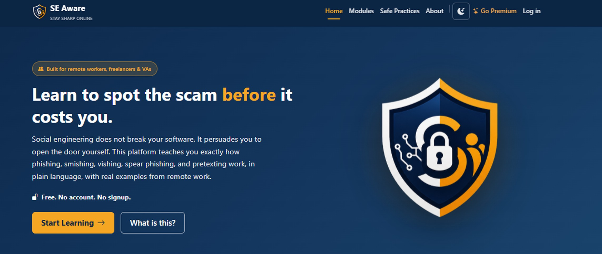

SE Aware
Stay sharp online.
A free training platform that teaches people to recognise social engineering before it costs them. Social engineering does not break your software, it persuades you to open the door yourself. SE Aware breaks down how phishing, smishing, vishing, spear phishing and pretexting actually work, in plain language, with real examples drawn from remote work.
Six modules cover phishing, spear phishing, smishing, vishing, pretexting and safe practices for remote work. A built-in learning assistant lets someone paste in a suspicious message and get a plain-language read on it without identifying themselves. Free, with no account and no signup, so nothing stands between a person and the material.